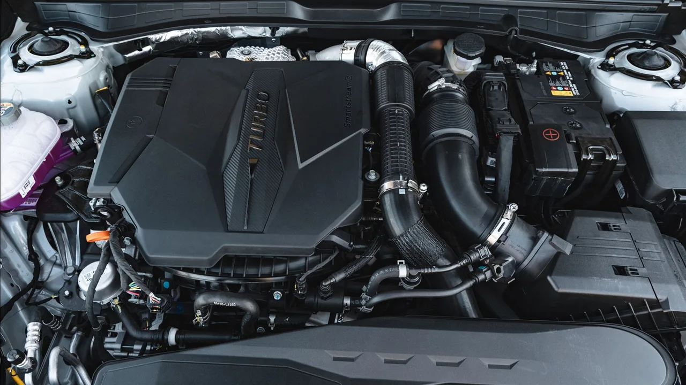
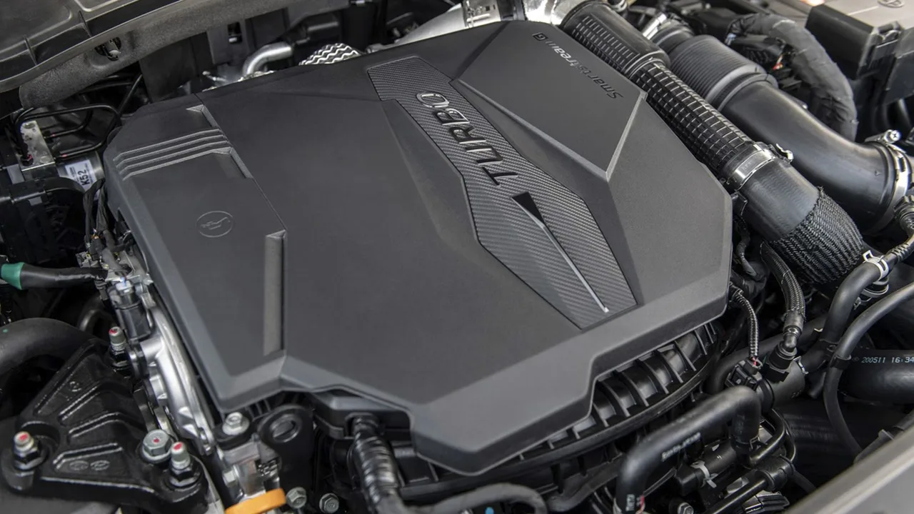
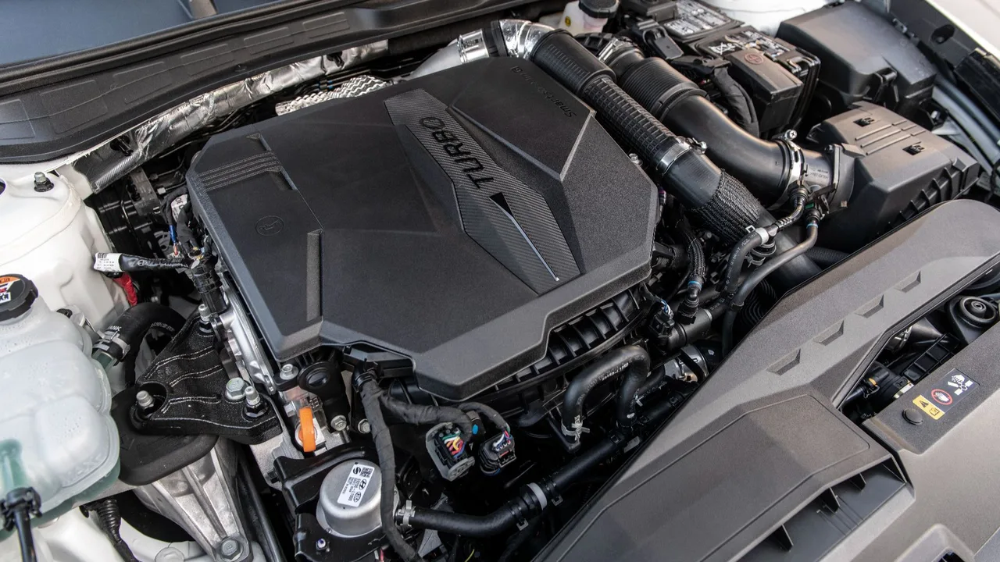
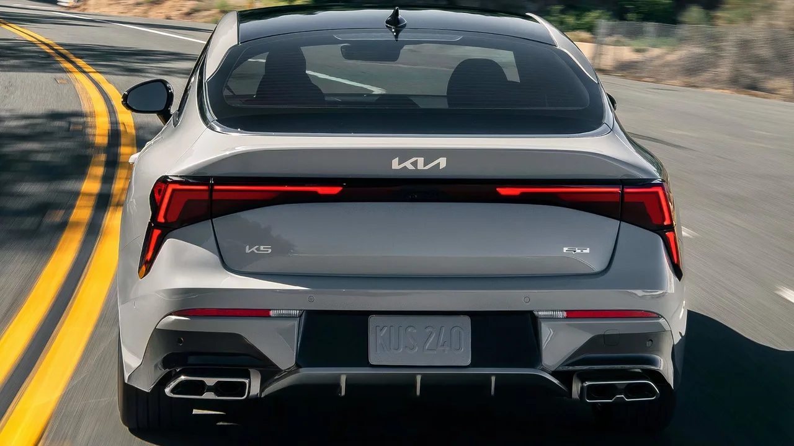

▲ 기아 K5 GT. 2.5T-GDI로 290마력을 내며 미국 시장 가격은 3만3,590달러다
퍼포먼스 엔진의 가격대가 올라가는 동안, 반대로 내려간 축이 하나 있습니다. 현대차그룹의 스마트스트림 2.5T-GDI입니다.
같은 엔진 하나가 세단부터 픽업, 프리미엄 SUV까지 걸쳐 있습니다. 기아 K5 GT와 현대 소나타 N 라인에서 290마력, 제네시스 GV70에서 300마력을 냅니다.
1. 같은 엔진, 다른 출력
탑재 차종이 넓습니다. 기아 K5 GT, 현대 소나타 N 라인, 싼타크루즈 XRT, 싼타페, 제네시스 GV70이 같은 2.5T를 씁니다.

▲ 스마트스트림 2.5T-GDI. 세단부터 프리미엄 SUV까지 걸쳐 쓰인다 ⓒ CarBuzz
| 차종 | 최고출력 | 최대토크 |
|---|---|---|
| 제네시스 GV70 2.5T | 300마력 @5,800rpm | 311lb-ft |
| 기아 K5 GT | 290마력 @5,800rpm | 311lb-ft |
| 현대 소나타 N 라인 | 290마력 | 311lb-ft |
| 현대 싼타크루즈 XRT | 281마력 | 311lb-ft |
| 현대 싼타페(비하이브리드) | 277마력 | 311lb-ft |
출력은 277마력에서 300마력까지 나뉘지만 토크는 311lb-ft로 같습니다. 차종별 세팅과 배기 구성, 권장 연료의 차이입니다. GV70 2.5T는 프리미엄 연료를 권장합니다.

▲ 엔진 커버에 표기된 터보. 같은 블록에서 차종별 세팅이 갈린다 ⓒ CarBuzz
2. 숫자보다 중요한 것은 회전수 구간
이 엔진이 평가받는 진짜 이유는 최고출력이 아닙니다. 311lb-ft의 토크가 1,650rpm에서 4,000rpm까지 유지된다는 점입니다.
일상 주행의 대부분이 이 구간에 들어갑니다. 시내에서 신호가 바뀌어 출발할 때, 고속도로에서 추월할 때 실제로 쓰는 회전수가 여기입니다. 최대토크가 좁은 구간에만 몰려 있으면 카탈로그 수치는 좋아도 체감은 다릅니다.

▲ 2,350rpm에 걸친 평탄한 토크 구간이 체감 성능을 만든다 ⓒ CarBuzz
2,350rpm에 걸친 평탄 구간은 이 가격대에서 흔한 사양이 아닙니다. 소배기량 터보는 대개 토크 피크가 좁고, 대배기량 자연흡기는 회전수를 올려야 힘이 나옵니다. 이 엔진은 그 사이를 메우는 성격입니다.
3. 경쟁 모델과 비교하면
미국 시장 기준으로 놓고 보면 위치가 분명해집니다. K5 GT는 3만3,590달러에 290마력을 냅니다.

▲ K5 GT. 같은 가격대 경쟁 모델보다 출력과 토크가 모두 높다 ⓒ CarBuzz
| 모델 | 최고출력 | 최대토크 | 가격 |
|---|---|---|---|
| 기아 K5 GT | 290마력 | 311lb-ft | $33,590 |
| 2026 스바루 WRX | 271마력 | — | $32,495 |
| 2026 폭스바겐 골프 GTI | 241마력 | 273lb-ft | $34,590 |
골프 GTI보다 1,000달러 싸면서 49마력이 높습니다. WRX와는 1,095달러 차이에 19마력이 높습니다. 성격이 다른 차들이라 단순 비교는 조심해야 하지만, 출력당 가격에서 우위인 것은 분명합니다.

▲ 소나타 N 라인. 같은 엔진을 얹고 미국 기준 3만6,050달러다 ⓒ CarBuzz
연비도 나쁘지 않습니다. K5 GT 기준 시내 23mpg, 고속도로 33mpg, 복합 27mpg입니다. 고성능 세팅에서 흔히 감수하는 연비 손실이 크지 않은 편입니다.
4. 분사 방식이 두 개인 이유
기술적으로 눈여겨볼 부분은 분사 구조입니다. 이 엔진은 다중포트 분사와 가솔린 직분사를 함께 씁니다. 실린더당 인젝터가 각각 하나씩 들어갑니다.
작동은 상황에 따라 갈립니다. 저속에서 중속까지는 포트분사가, 고부하와 고회전에서는 직분사가 작동합니다.
📍 두 방식을 함께 쓰는 이유
직분사는 연소실에 직접 연료를 뿌려 효율과 출력에 유리하지만, 흡기 밸브에 카본이 쌓이는 문제가 알려져 있습니다. 포트분사는 흡기 포트에 뿌려 밸브를 씻어내는 효과가 있는 대신 고부하 대응이 약합니다. 두 방식을 상황별로 나눠 쓰면 각각의 단점을 서로 보완할 수 있습니다.
또 하나의 장점은 연료 등급입니다. 일반유로도 정상 작동하도록 설계돼 있습니다. GV70처럼 프리미엄 연료를 권장하는 세팅이 있지만, 대부분의 탑재 차종은 일반유 기준으로 성능이 정의됩니다.
5. 아직 검증되지 않은 것
한 가지는 유보해 둘 필요가 있습니다. 미국 시장 기준으로 가장 오래된 탑재 차량이 2021년식이어서, 누적 운행 기간이 약 5년에 그칩니다.
즉 장기 내구성에 대한 평가는 아직 제한적입니다. 현대차그룹은 과거 세타 II 엔진에서 내구성 문제를 겪은 전력이 있고, 그만큼 이 엔진의 10년 뒤 평판은 지금 확정할 수 없습니다.
구매를 고려한다면 이렇게 정리됩니다. 지금 시점에서 같은 돈으로 얻는 성능은 동급에서 우위이고, 토크 특성 덕분에 일상 주행에서의 체감도 좋습니다. 다만 장기 보유를 전제한다면 정기 점검 이력과 보증 조건을 함께 따져야 합니다.
정리하면 이렇습니다. 2.5T-GDI가 기준을 바꾼 지점은 최고출력이 아니라 가격 대비 실사용 토크입니다. 290마력이라는 숫자보다, 1,650rpm부터 나오는 311lb-ft가 이 엔진의 정체를 더 잘 설명합니다.